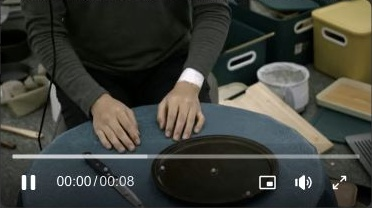
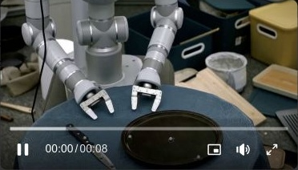
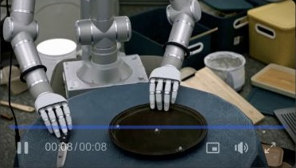
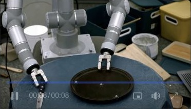
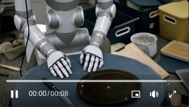
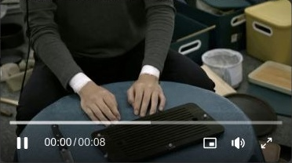
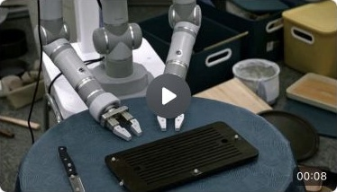
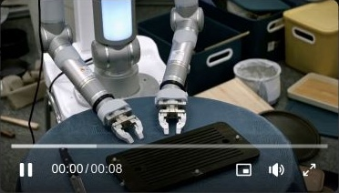
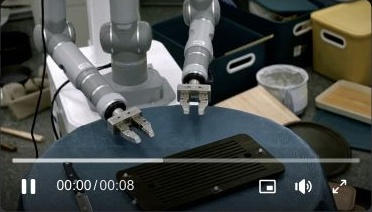
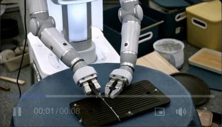

Specify each contact phase
Identify the acting arm, contact region, action timing, and object response. Bind the final instruction to the source endpoint.
Dual-Bridge · Reference-video-conditioned generation
Dual-Bridge pairs timed contact instructions with first- and last-frame visual anchors, preserving the source action as the executor changes.
The method
The human video fixes the scene, camera, object identities, contact order, and final state. Both bridges translate that evidence into conditions for the same frozen generator.
Task description + target robot embodiment
Identify the acting arm, contact region, action timing, and object response. Bind the final instruction to the source endpoint.
Remove the human and complete the background in the source's first and last frames. Fix robot identity, composition, and terminal object layout.
Source video + phase instructions + two visual anchors → one robot video
The language–visual bridge concept is also used in Soap2Soap. This RV2V configuration focuses on manipulation contact phases and source endpoint anchors.
Matched conditioning comparison
56 TACO clips and 4 H2O clips, covering third-person and first-person views. Every condition uses the same frozen generator, source video, seed 71020, and one sample per source. All 240 outputs enter the reported results.
| Condition | G | A | C | E | Q | Strict / 100 | First places |
|---|---|---|---|---|---|---|---|
| Bare MiniMax-H3 | 0.911 | 0.917 | 0.970 | 0.832 | 0.773 | 89.21 | 18/60 |
| Soap2Soap conditioning | 0.926 | 0.929 | 0.957 | 0.805 | 0.774 | 88.41 | 12/60 |
| VideoWeaver conditioning | 0.938 | 0.936 | 0.963 | 0.809 | 0.772 | 89.01 | 11/60 |
| Dual-Bridge | 0.942 | 0.944 | 0.963 | 0.856 | 0.775 | 90.62 | 19/60 |
G: terminal goal · A: action sequence · C: contact · E: embodiment · Q: visual quality. Soap2Soap and VideoWeaver are conditioning adapters on MiniMax-H3 in this comparison.
Dual-Bridge has the highest reported goal, action, embodiment, and visual-quality means. Bare conditioning has the highest contact mean (0.970 versus 0.963). Identity constraints flag 29 clips for both Dual-Bridge and bare conditioning, 38 for VideoWeaver, and 32 for Soap2Soap.
Three model judges, listed in the report as gemini-3.8-flash, gpt-5.4, and qwen3-vl-plus, view each output with its human source without the prompt or method label. Each item is scored from 0 to 4; judge means are divided by four.
Strict = 100 × (0.15G + 0.15A + 0.30C + 0.30E + 0.10Q)
Stable parallel-jaw grippers and stable multi-finger hands are both accepted. Changes in end-effector category or finger count, rod-like collapse, and object fusion reduce embodiment scores.
Strict is the source report's RV2V metric. The report provides aggregate means and selected examples; it does not provide per-clip score files, confidence intervals, or separate language-only and visual-only ablations. Physical-error coverage remains incomplete.
Qualitative comparisons
Two TACO cases from the report show the source and all four conditions. Click a preview to view the original videos in the source report (Feishu sign-in may be required). The previews retain the report player display; captions describe the full clips. These selected examples accompany the full 60-case aggregate above.

Source reference
Human source demonstration.

Strict 88.4
Mismatched grippers; the left gripper fuses with the tray.

Strict 97.5
The report describes a plausible replacement.

Strict 89.5
One gripper merges during the clip; the other sticks to the tray.

Strict 97.6
The report describes a plausible replacement without the highlighted gripper fusion.

Source reference
Human source demonstration.

Strict 83.2
Mid-clip jaw/object fusion and a hallucinated cut in the board.

Strict 82.7
Two fingers become three; the board appears to split.

Strict 81.4
Mid-clip jaw/object fusion and a hallucinated split in the board.

Strict 85.9
Mid-clip jaw/object fusion remains, but the first and last frames retain two fingers and the board does not split.